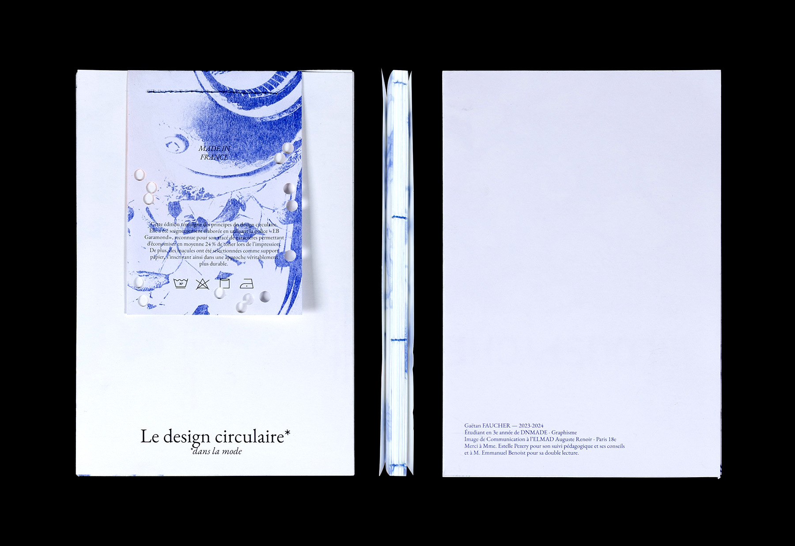
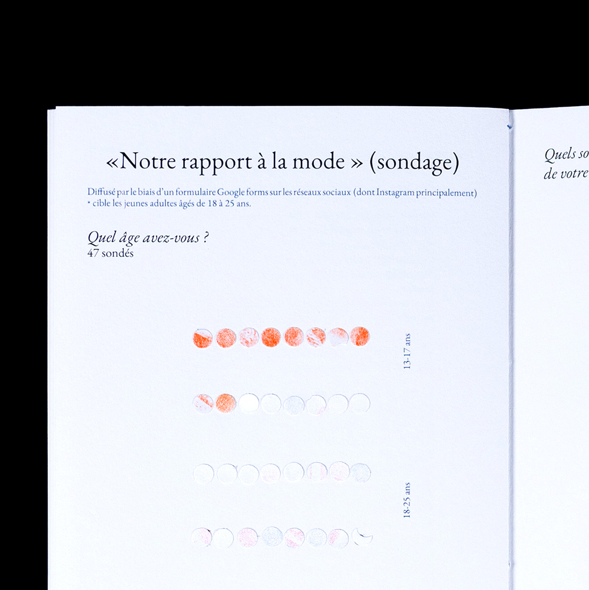
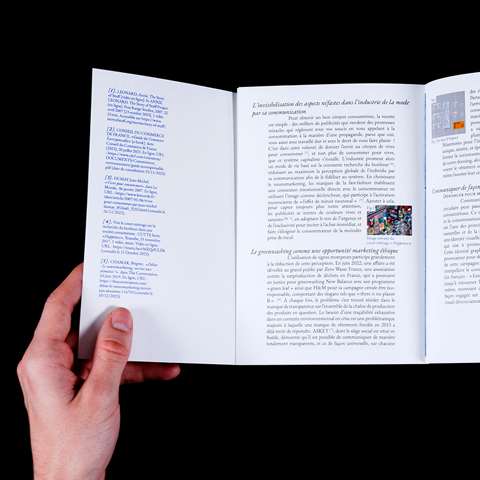
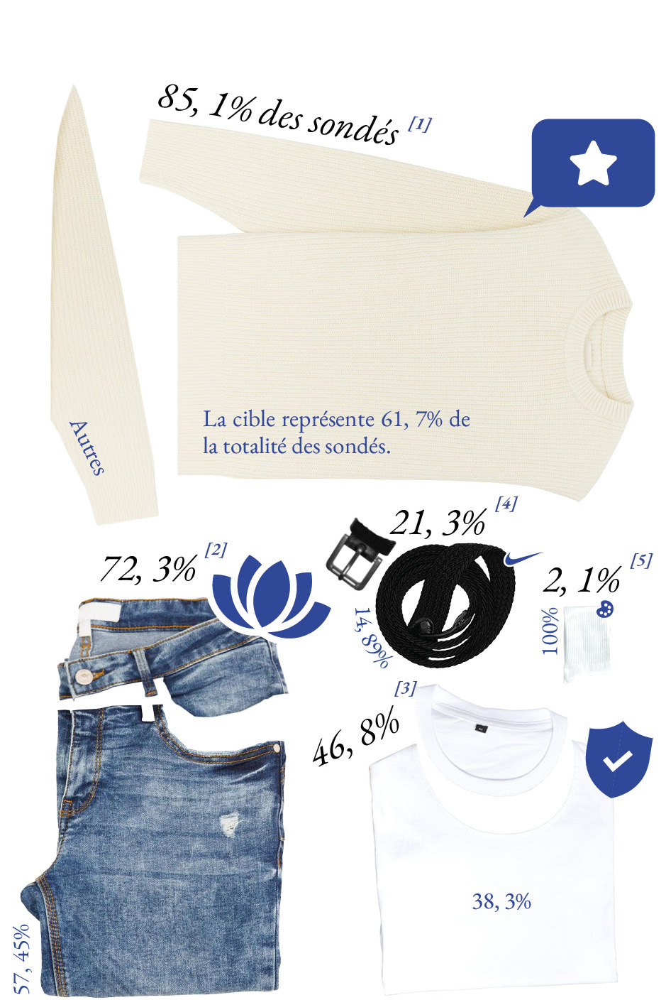

Quels sont les aspects principaux de votre rapport
au vêtement ?
47 sondés âgés de 18 à 25 ans principalement ont répondus à un formulaire questionnant leurs rapport au vêtement.
LÉGENDE
[1] C’est un moyen de me valoriser et d’avoir plus confiance en moi.
[2] C’est un moyen de me sentir confortable avec moi-même.
[3] C’est utilitaire (avoir chaud, se protéger de la pluie, etc.).
[4] Ça me permet d’entretenir un sentiment d’appartenance à un groupe (valeurs, histoire, etc.).
[5] Un moyen d’expression artistique.